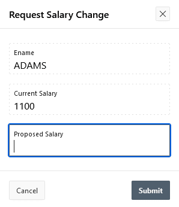
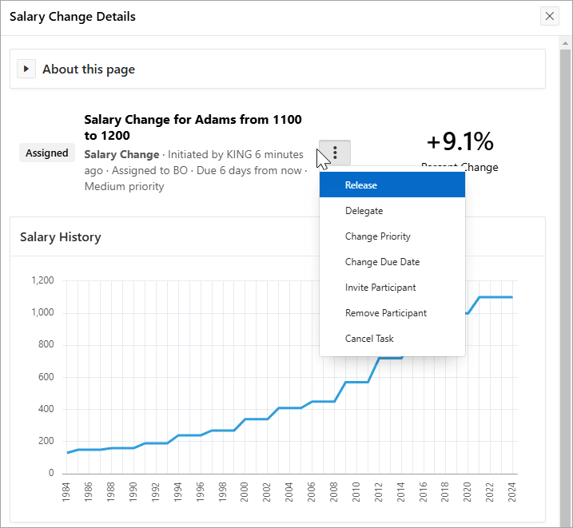
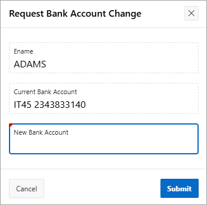
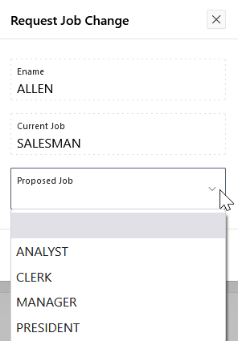
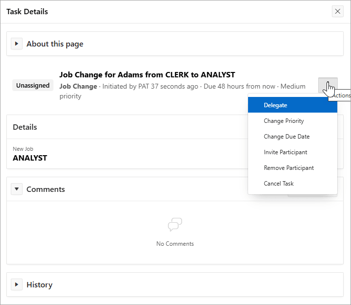

20.14.2 Example: Approval Tasks and Action Tasks
View the approvals component and action tasks functionality in the Sample Workflows, Approvals, and Tasks app.
The Sample Workflows, Approvals, and Tasks Application
Sample apps highlight specific APEX functionality and serve as a developer guide for how to use particular features. For approvals and action tasks, you can install the Sample Workflows, Approvals, and Tasks app from the Gallery.
The Employees screen shows all employees. Users can request the following changes for an employee:
- Salary - Requests a change to the employee's salary. This functionality uses an approval task to review and approve the change and a customized task details page.
- Job - Requests a change to the employee's job. This functionality uses an approval task to review and approve the change and a standard task details page.
- Bank - Requests a change to the employee's bank account. This functionality uses an approval task that the initiating employee can approve.
- Appraisal - Begins the process of an employee's appraisal. This functionality uses a workflow with action tasks for the employee, the employee's manager, and, if applicable, a VP.
- Laptop - Requests the purchase of a new laptop for the employee. This functionality uses a workflow with an approval task and an action task that is programmatically completed when the laptop is delivered.
Request Salary Change
The Request Salary Change screen allows users to view the current salary for an employee and enter a proposed salary. 
Description of the illustration approvals_request_salary_change.png
Once a user requests a salary change, the Salary button on the Employees screen is no longer visible until the salary change request is approved or rejected.
The Salary Change Details screen is a customized task details page that displays additional information about the specific task instance, including a graph of the employee's salary history, and the percent change that the requested salary change represents. 
Description of the illustration approvals_salary_change_details.png
Request Bank Account Change
The Request Bank Account Change screen allows users to view the current bank account information for an employee and enter a new bank account number. 
Description of the illustration bank_account_change.png
The approval task definition associated with the bank account change has the Initiator Can Complete switch set to ON, which means that the initiator can approve their own task.
Request Job Change
The Request Job Change screen allows users to view the current job for an employee and select a proposed job. 
Description of the illustration approvals_request_job_change.png
Once a user requests a job change, the Job button on the Employees screen is no longer visible until the job change request is approved.
In contrast to the Salary Change Details screen, the Task Details screen for the job change task is not customized. 
Description of the illustration approvals_job_change_details.png
Unified Task Lists
- My Tasks, based on the My Tasks context
- My Requests, based on the Initiated by Me context
- Task Administration, based on the Admin Tasks context
Each unified task list shows tasks relevant to the user currently logged in, allowing them to manage, track, or administer both approval tasks and action tasks.
Tip:
To view this example, install the sample app, Sample Workflows, Approvals, and Tasks. To learn more, see Installing Apps from the Gallery.
Once you install Sample Workflows, Approvals, and Tasks, you can reference the More Information page of the sample app for an overview of workflow features, approval and action tasks features, and a discussion of how to use the sample app.
Parent topic: About Tasks